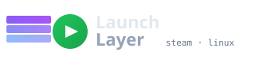

Visual
Use the TUI
Browse installed games, see the resolved settings, and change common options without editing a file.
./launchlayer --tui
Steam launch settings, kept in one place
LaunchLayer reads plain settings files, checks your Linux system, and assembles GameMode, Gamescope, MangoHUD, CPU affinity, and other tools before the game starts.
%command%Nothing is uploaded during a normal launch.
Plain filesReview every setting
Dry-run firstPreview without launching
Hub optionalLocal use needs no account
Bash 4.3+No resident service
First launch
Keep the repository in a stable location. Steam stores its path in each game's Launch Options.
Clone the repository into your home directory.
git clone https://github.com/bolens/launch-layer.git ~/launchlayer
cd ~/launchlayerInstall completions, create the command link, and detect this machine.
./launchlayer --setup --completions --symlink \
--print-launch-option --write-local-configPaste the printed command into a game's Properties → General → Launch Options.
"$HOME/launchlayer/launchlayer" %command%Keep %command%. Steam replaces it with the actual game command.
Steam Deck: use the same command under Library → gear icon → Properties → General → Launch Options.
Flatpak Steam: installations under your home directory usually work without another permission. For an installation elsewhere, grant Steam access with flatpak override --user com.valvesoftware.Steam --filesystem=/path/to/launchlayer.
Per-game control
LaunchLayer combines machine profiles, shared defaults, a preset, and the selected game's file. Later values override earlier ones.
Visual
Browse installed games, see the resolved settings, and change common options without editing a file.
./launchlayer --tuiTerminal
Start from a preset, then change only the values this game needs.
./launchlayer --init-appid 2357570 competitive
./launchlayer --edit-appid 2357570Read-only
See the loaded files, final values, and wrapper order without starting the game.
./launchlayer --show-config 2357570Before enabling a tool
LaunchLayer coordinates optional tools; it does not bundle them. Doctor identifies missing programs and prints installation hints for your distribution.
| Setting | What it controls | Program needed |
|---|---|---|
GAMEMODE=1 | CPU and system performance profile | GameMode |
GAMESCOPE=1 | Resolution, scaling, HDR, and frame limits | Gamescope |
MANGOHUD=1 | Performance overlay and logging | MangoHud |
VKBASALT=1 | Vulkan post-processing | vkBasalt |
DLSS_SWAPPER=1 | DLSS libraries and presets | dlss-swapper |
Your files and data
Normal launches stay on your machine. The Community Hub is optional, and restore commands preview their work before replacing files.
Backup
Export profiles, game files, and selected preferences into a timestamped archive.
./launchlayer --backup-config
./launchlayer --restore-backup --listCommunity
Hub commands share or retrieve game settings. LaunchLayer rejects remote command hooks and other settings that could modify the host.
./launchlayer --hub-prefs show
./launchlayer --hub-recommend APPIDInspection
The optional MCP server exposes diagnostics and resolved settings, but it cannot launch games or change configuration. Redacted mode removes exact paths and hardware identifiers.
./launchlayer --mcp --privacy redactedTroubleshooting
Open a row for the first checks and the command that confirms the result.
Confirm that Launch Options contains an absolute, quoted path followed by %command%. Remove old gamemoderun, mangohud, or Gamescope prefixes.
./launchlayer --doctor
./launchlayer --show-config APPIDSteam often has a smaller PATH than your terminal. Use the full path printed by setup. Flatpak Steam also needs permission to read installations outside your home directory.
./launchlayer --setup --print-launch-option
./launchlayer --detect-environmentKeep wrappers in LaunchLayer config, not in both places. Replace gamemoderun %command% with the single LaunchLayer command and set GAMEMODE=1.
Check vm.max_map_count. The install action requires root and writes the supplied sysctl configuration.
./launchlayer --sysctl status
./launchlayer --sysctl installUse the backup and restore commands or the TUI's Backup & restore menu. Import and restore preview their changes until you pass --yes.
./launchlayer --restore-backup --list
./launchlayer --restore-backup --dry-runExplore the system
The interactive diagram separates local settings and runtime state from the optional Community Hub trust boundary.
Technical reference
The repository documents every command, key, module boundary, third-party condition, and release step at the revision where it applies.